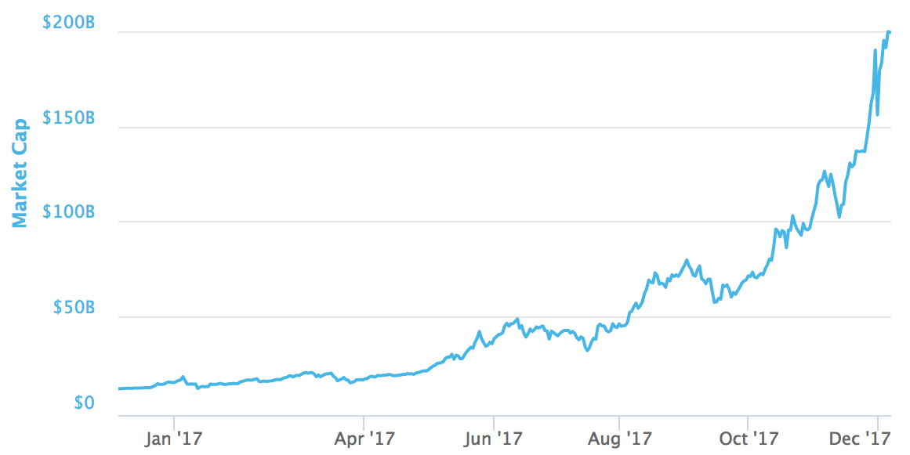
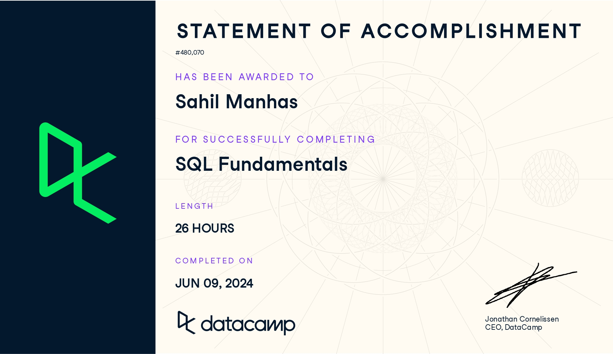

June 10, 2023
This project provided a comprehensive exploration of the Bitcoin cryptocurrency market, equipping me with valuable skills in data manipulation, cleaning, and visualization. The insights gained from this analysis are crucial for anyone interested in understanding the dynamics of cryptocurrency markets.

This project aims to address the critical issue of depression among university students by leveraging data analysis and machine learning techniques. This project showcases my ability to handle complex datasets, perform thorough data analysis, and create predictive models using machine learning techniques. It demonstrates my proficiency in Python, pandas, and matplotlib, as well as my commitment to addressing real-world health issues through data science.
This project explores the world's oldest businesses by analyzing a database using SQL. The objective is to identify the oldest and newest founding years, providing insights into business longevity and geographical distribution. Utilizing PostgreSQL, the project involves selecting specific columns, filtering data, applying aggregation functions, and performing inner joins. Key findings include identifying businesses with the earliest and most recent founding years, and analyzing their locations to reveal historical patterns. This project demonstrates proficiency in SQL querying, data analysis, and visualization to understand the history and distribution of long-standing enterprises.

Donec eget ex magna. Interdum et malesuada fames ac ante ipsum primis in faucibus. Pellentesque venenatis dolor imperdiet dolor mattis sagittis magna etiam.

This comprehensive skill track on DataCamp equips learners with essential SQL skills for data manipulation and analysis. Covering topics such as selecting, filtering, and aggregating data, as well as performing joins and subqueries, it provides a solid foundation for database querying. The track is designed to build proficiency in SQL, enabling users to effectively interact with relational databases and extract meaningful insights from data.